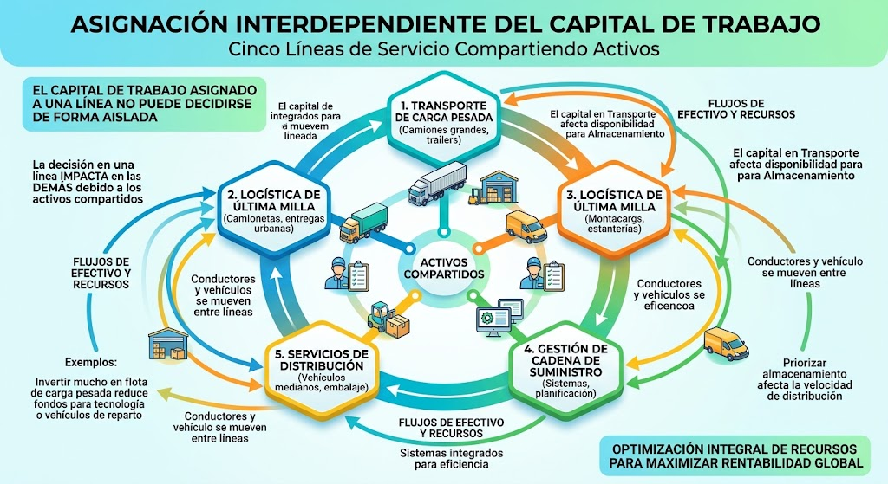

1. Inicio
Esta aplicación resuelve un problema de asignación de capital de trabajo entre cinco líneas operativas de una empresa de transporte, logística y almacenamiento, usando el Método de Gradientes Conjugados Precondicionado (GCP) (Suñagua ,2020).
¿Qué hace la aplicación?
Permite construir y resolver el sistema lineal Ax = b en tres escenarios financieros distintos: ideal, bajo estrés y mal condicionado. Para cada escenario podrás:
- editar la matriz A y el vector b;
- elegir el precondicionador (Jacobi, SSOR o IC0);
- ejecutar GC simple y GCP, comparando iteraciones y residuos;
- calcular la solución de referencia por Cholesky y los errores por variable (Ea, Er, Ep);
- obtener los números de condición κ(A) y κ(M−1A);
- visualizar la curva de convergencia en escala logarítmica.
2. Caso de estudio
Una empresa de transporte, logística y almacenamiento opera cinco líneas de servicio simultáneas que comparten activos (flota, bodega, conductores, sistemas). Por eso, el capital de trabajo asignado a una línea no puede decidirse de forma aislada: depende de lo que se asigne a las demás.

2.1 Contexto financiero
La empresa debe decidir cuánto capital de trabajo inmovilizar en cada línea para sostener el ciclo operativo: combustible, peajes, mantenimiento, personal, suministros de bodega y reservas de contingencia. El capital total es limitado y las líneas compiten por recursos compartidos.
2.2 Las cinco variables
Cada variable xi representa el capital asignado (en miles de USD) a una línea operativa:
El vector solución x = (x1, x2, x3, x4, x5)T es, por tanto, el plan de asignación de capital que buscamos.
2.3 ¿De dónde salen los coeficientes de A?
La ecuación i-ésima del sistema es:
Cada término tiene una interpretación financiera concreta:
- Diagonal aii: costo propio de financiar la línea i. Agrupa costo de capital, combustible, mantenimiento y personal. Es positivo y dominante.
- Fuera de la diagonal aij = aji: tasa de acoplamiento operativo entre las líneas i y j. Mide cuánto del capital asignado a i queda condicionado por la operación de j (reasignación de flota, personal polivalente, bodega compartida, demanda correlacionada). Es positiva y se asume simétrica.
- Término independiente bi: cobertura operativa objetivo de la línea i, calculada como demanda de servicio × ciclo operativo × factor de nivel de servicio.
La simetría de A es un supuesto de modelado explícito: la tasa a la que la capacidad de i se reasigna a j se asume igual a la tasa inversa. Es una hipótesis razonable cuando los activos son fungibles entre líneas.
3. Formulación matemática
El plan de asignación de capital se obtiene resolviendo un sistema lineal Ax = b. Para poder aplicar el método GCP, la matriz A debe ser simétrica y definida positiva. A continuación se explica cómo se verifica cada propiedad.
3.1 Sistema lineal
donde x contiene el capital asignado a cada línea y b las coberturas operativas requeridas.
3.2 Demostración de simetría
La simetría exige A = AT, es decir, aij = aji para todo par de índices.
Cómo se verifica: al editar A en el simulador, la aplicación comprueba |aij − aji| < 10−9. Si falla, se rechaza el cálculo y se avisa al usuario. En los tres escenarios del proyecto A es simétrica por construcción.
3.3 Demostración de definición positiva
Una matriz simétrica A es definida positiva si xTAx > 0 para todo x ≠ 0. Se verifica por tres vías equivalentes:
Vía 1 · Teorema de Gershgorin (dominancia diagonal)
Si la matriz es estrictamente diagonal dominante con diagonal positiva, es decir:
entonces todos los autovalores de A son reales y positivos. Es el método usado en los escenarios 1 y 2.
Vía 2 · Factorización de Cholesky
Si A admite la factorización
con L real y diagonal positiva, entonces A es definida positiva. Es el criterio que usa el simulador al editar A: si Cholesky falla, la matriz se rechaza. También es el método directo para calcular la solución de referencia.
Vía 3 · Cálculo explícito de autovalores
Si se conocen los autovalores λi y todos son positivos, entonces A es definida positiva. Es el método usado en el escenario 3 (mal condicionado), donde los autovalores se calculan analíticamente por la estructura de la matriz.
3.4 Interpretación financiera de la dominancia diagonal
Que aii > Σj≠i aij significa:
3.5 Solución de referencia por método directo
Como A es simétrica y definida positiva en los tres escenarios, se usa la factorización de Cholesky para obtener la solución de referencia:
El vector xref así obtenido se denomina solución numérica de referencia y sirve para medir el error de GCP.
4. Tres escenarios obligatorios
Cada escenario comparte las mismas variables y la misma estructura del modelo, pero modifica A, b o ambos de forma justificada. Los números de condición κ(A) se calculan en vivo a partir de los autovalores.
5. Fundamento teórico
Aquí se describen los dos algoritmos que se comparan (GC simple y GCP), los precondicionadores disponibles y las fórmulas con las que se miden los errores y el condicionamiento.
5.1 Gradientes Conjugados simple (GC)
El método de Gradientes Conjugados resuelve Ax = b cuando A es simétrica y definida positiva, construyendo en cada iteración una dirección A-ortogonal (conjugada) a las anteriores. En aritmética exacta converge en a lo sumo n iteraciones; en la práctica, depende de κ(A).
Datos: x₀ (por defecto 0), tol = 10⁻⁶, Nmax
r₀ = b − A x₀
p₀ = r₀
rsold = r₀ᵀ r₀
para k = 1, 2, …, Nmax:
Ap = A p_{k−1}
α = rsold / (p_{k−1}ᵀ Ap)
x_k = x_{k−1} + α p_{k−1}
r_k = r_{k−1} − α Ap
si ‖r_k‖₂ / ‖b‖₂ < tol: parar
rsnew = r_kᵀ r_k
β = rsnew / rsold
p_k = r_k + β p_{k−1}
rsold = rsnew
La tasa de convergencia (Suñagua 2020, ec. 2) es:
5.2 Gradientes Conjugados Precondicionado (GCP)
Se implementa el Algoritmo 2 de Suñagua (2020), también llamado algoritmo Mz. La idea es transformar el sistema original en uno equivalente con mejor condicionamiento usando una matriz M = CCT. En la práctica no se forma M explícitamente: solo se resuelve Mzk = rk en cada iteración.
Datos: x₀, tol, Nmax, precondicionador M = C Cᵀ
r₀ = b − A x₀
z₀ = M⁻¹ r₀ (resolver C Cᵀ z = r)
p₀ = z₀
rzold = r₀ᵀ z₀
para k = 1, 2, …, Nmax:
Ap = A p_{k−1}
α = rzold / (p_{k−1}ᵀ Ap)
x_k = x_{k−1} + α p_{k−1}
r_k = r_{k−1} − α Ap
si ‖r_k‖₂ / ‖b‖₂ < tol: parar
z_k = M⁻¹ r_k
rznew = r_kᵀ z_k
β = rznew / rzold
p_k = z_k + β p_{k−1}
rzold = rznew
La diferencia con GC simple es la introducción de zk (residuo precondicionado) y del producto interno rTz en lugar de rTr. Cuando M aproxima bien a A, la convergencia se acelera notablemente.
5.3 Precondicionadores disponibles
Cada precondicionador aproxima A de una forma distinta y es adecuado para un tipo de mal condicionamiento:
| Precondicionador | Definición | Cuándo usarlo |
|---|---|---|
| Jacobi | M = diag(A) | Mal escalamiento diagonal (diagonales de tamaños muy distintos) |
| SSOR | M = (D/ω + L) D−1 (D/ω + L)T, ω ∈ (0,2) | Acoplamiento fuerte fuera de la diagonal |
| IC0 con umbral | M = LLT (Cholesky incompleta) | Acoplamiento fuerte con estructura dispersa aprovechable |
5.4 Análisis de errores y condicionamiento
Para cada componente i = 1, …, 5 se calculan tres errores:
Además, se reporta el residuo relativo global:
Y los números de condición de la matriz original y de la precondicionada:
Un κ(A) grande significa que pequeñas perturbaciones en b producen grandes cambios en x. El objetivo del precondicionador es reducir κ(M−1A) para acelerar la convergencia.
6. Simulador interactivo
Elige un escenario, revisa la matriz A y el vector b, selecciona el precondicionador y ejecuta. Los resultados se actualizan en tablas y en un gráfico de convergencia.
6.1 Selección de escenario
6.2 Matriz A y vector b
Puedes editar cualquier coeficiente. Al ejecutar, la aplicación verifica simetría y definición positiva antes de calcular; si no se cumplen, se rechaza el cálculo y se muestra el error.
6.3 Parámetros del método
6.4 Tabla comparativa entre escenarios
Se actualiza con la última ejecución de cada escenario.
7. Módulo de pruebas de software (QA)
Cada botón ejecuta el caso de prueba y registra el resultado real obtenido en la bitácora inferior. Los cuatro casos corresponden a los requisitos del desafío.
7.1 Caso 1 · Carga de escenarios
Verifica que los tres escenarios (Ideal, Bajo estrés, Mal condicionado) se cargan y ejecutan con GC y GCP alcanzando la tolerancia, sin errores.
7.2 Caso 2 · Matriz no válida
Introduce una matriz no simétrica y comprueba que el sistema la rechaza y notifica al usuario sin colapsar.
7.3 Caso 3 · Edición dinámica
Modifica un coeficiente de A y verifica que la solución de referencia, GCP, errores y condicionamiento se recalculan correctamente.
7.4 Caso 4 · Comparativa de precondicionamiento
En el escenario mal condicionado, verifica que GCP alcanza la tolerancia en menor o igual número de iteraciones que GC simple.
7.5 Bitácora de pruebas
| Hora | Prueba | Entrada | Esperado | Obtenido | Conclusión |
|---|
8. Conclusiones
8.1 Conclusiones técnicas
- El sistema 5×5 propuesto es simétrico y definido positivo en los tres escenarios: por dominancia diagonal (Gershgorin) en los escenarios ideal y de estrés, y por autovalores positivos en el mal condicionado.
- El escenario de estrés desplaza el punto de equilibrio (asignaciones mayores) pero no degrada el condicionamiento. Esto distingue dos fenómenos que suelen confundirse: cambio de nivel versus pérdida de estabilidad numérica.
- El escenario mal condicionado, construido con escalas muy dispares entre líneas, eleva κ(A). El precondicionador de Jacobi reduce drásticamente κ(M−1A) y por tanto el número de iteraciones de GCP.
- El algoritmo GCP de Suñagua (2020), en su forma Mz, es adecuado para matrices SPD y ofrece una ganancia visible frente a GC simple precisamente en el escenario mal condicionado.
8.2 Conclusiones financieras
- La asignación de capital entre líneas operativas no es independiente: el acoplamiento por activos compartidos obliga a resolver un sistema lineal acoplado.
- En un contexto estable, la asignación óptima es única y bien determinada. Un shock de costos eleva el nivel requerido de capital pero conserva la estabilidad del sistema.
- Cuando las líneas tienen escalas muy dispares (por ejemplo, cadena de frío muy intensiva en capital frente a logística inversa ligera), la asignación óptima queda mal escalada y exige normalización por precondicionamiento para que el modelo numérico sea robusto.
8.3 Referencias
- Suñagua S., P. (2020). Método de Gradientes Conjugados Precondicionado. Revista Boliviana de Matemática – UMSA, 04, 2–7.
- Golub, G. H., & Van Loan, C. F. (2013). Matrix Computations (4th ed.). Johns Hopkins University Press.
- Saad, Y. (2003). Iterative Methods for Sparse Linear Systems (2nd ed.). SIAM.
- Higham, N. J. (1990). Analysis of the Cholesky decomposition of a semi-definite matrix. En Cox & Hammarling (eds.), Reliable Numerical Computation, 161–185.
- Hestenes, M. R., & Stiefel, E. (1952). Methods of conjugate gradients for solving linear systems. NBS Washington, DC.
8.4 Tabla comparativa final
Resumen consolidado de los tres escenarios. Se completa a medida que ejecutas cada uno en el simulador (sección 6) y se actualiza automáticamente tras cada ejecución.